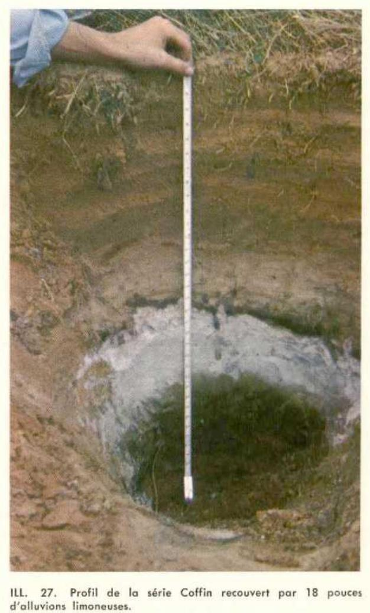
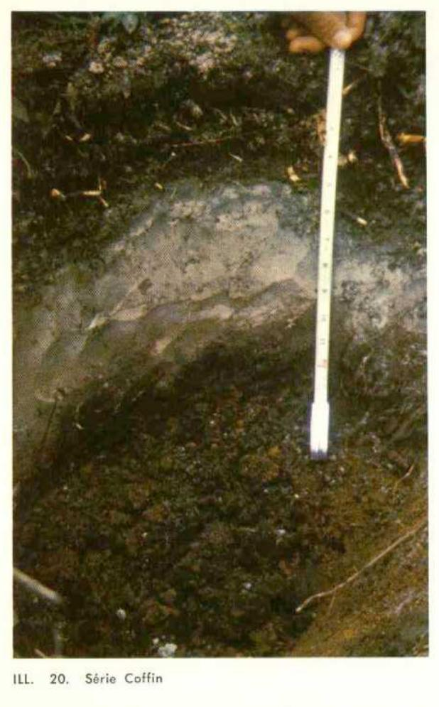

Identification & Caractéristiques Générales
La série Coffin s'est développée aux dépens de matériaux résiduels sableux issus de la formation géologique de Cap-aux-Meules, principalement localisés à des altitudes inférieures à 15 mètres (50 pieds) dans la région des Îles-de-la-Madeleine. Ce membre pédogénétique le plus évolué de son association morphogénétique, comprenant également les séries Gros-Cap et Fatima, occupe des positions topographiques planes.
Le profil pédologique présente des sols à texture légère et grossière, caractérisés par une compacité marquée et une cimentation de type ortstein au niveau des horizons B. Le drainage naturel varie d'imparfait à bon, mais la dynamique hydrique est fortement perturbée par une faible capillarité et la présence d'une nappe phréatique perchée au-dessus de l'horizon cimenté. La réaction du sol est acide et la pierrosité est fonction du degré d'altération du matériau résiduel sous-jacent. Le couvert végétal naturel est principalement constitué d'une pessière à épinette noire (Picea mariana) associée à une avifaune et une flore acidophile comprenant le bleuet (Vaccinium angustifolium), le thé du Labrador (Rhododendron groenlandicum) et le kalmia.
Les aptitudes agronomiques des sols de la série Coffin sont extrêmement limitées en raison de la faible fertilité naturelle, de la sécheresse estivale induite par la faible rétention en eau et de la présence d'une couche cimentée restrictive pour l'enracinement. Ces contraintes majeures confèrent au milieu une productivité agricole très basse. Par conséquent, ces sols sont généralement maintenus sous couvert forestier et ne se prêtent guère aux grandes cultures ou aux productions maraîchères sans des investissements majeurs en matière de défoncement de l'ortstein, de fertilisation intensive et d'irrigation.
Classification Taxonomique & Environnement Pédologique
| Ordre Pédologique | Podzolique |
|---|---|
| Grand Groupe (SCSS) | Podzol humique |
| Sous-Groupe Taxonomique | Podzol humique à orstein |
| Famille Pédologique | Sableuse, mixte sableux, acide |
| Mode de Dépôt Parental | Résiduel |
| Classe de Drainage Naturel | Modérément bien drainé |
| Régime Thermique & Humidité | Frais / Humide |
Description Morphologique du Profil Type
Séquence génétique des horizons pédologiques caractérisant le profil type représentatif de la série Coffin :
Profil forestier / boisé — Pédologie des Îles-de-la-Madelei
✓ Source : Pédologie des Îles-de-la-Madelei — Page 34Couleur Munsell : 2.5YR 3/2, 5YR 3/1
Structure & Consistance : Polyédrique à granulaire
Description morphologique : Matière organique mésotrophe à eutrophe rouge sombre (2.5YR 3/2), gris très foncé à sec (5YR 3/1); extrêmement acide.
Couleur Munsell : 5YR 8/1
Structure & Consistance : Polyédrique à granulaire
Description morphologique : Sable fin blanc à sec (5YR 8/1); particulaire, friable et perméable; extrêmement acide.
Couleur Munsell : 2.5YR 5/2
Structure & Consistance : Polyédrique à granulaire
Description morphologique : Sable loameux rouge faible (2.5YR 5/2); particulaire, légèrement collant; mal drainé; extrêmement acide.
Profils Photographiques & Planches de Terrain
Documents iconographiques, figures pédologiques et coupes de terrain documentées dans les mémoires d'inventaire pour de la série Coffin :


Propriétés Physico-Chimiques & Analyses de Laboratoire
| Horizon | Prof. (pces/cm) | Sable % | Limon % | Argile % | pH | C % | N % | Ca éch. | Mg éch. | K éch. | H+ éch. | Bases tot. | C.E.C. (meq/100g) | Saturation % |
|---|---|---|---|---|---|---|---|---|---|---|---|---|---|---|
| L-H(Ah) | 0 - 5 | 3.9 | 41.20 | 0.67 | 6.7 | 7.6 | 1.1 | 112.0 | 15.4 | 127.4 | 12.0 | |||
| Ae | 5 - 9.5 | 88.8 | 9.0 | 2.2 | 4.6 | 0.39 | 0.02 | 0.1 | 0.5 | 0.1 | 2.0 | 0.7 | 2.7 | 25.9 |
| Bhfcc | 11 - 14 | 81.8 | 12.0 | 6.2 | 4.0 | 2.34 | 0.07 | 0.1 | 1.3 | 0.2 | 30.0 | 1.6 | 31.6 | 5.0 |
| Bfhe | 14 - 22 | 86.8 | 10.0 | 3.2 | 4.4 | 1.75 | 0.06 | 0.1 | 0.5 | 0.1 | 24.0 | 0.7 | 24.7 | 2.8 |
Particularités Régionales, Phases & Variantes Pédologiques
Déclinaisons régionales, faciès texturaux, phases d'érosion ou de pierrosité et variantes cartographiées par étude pour de la série Coffin :
| Étude Régionale | Symbole | Appellation / Phase / Variante | Différenciation avec la série type (Analyse pédologique) |
|---|---|---|---|
| Pédologie des Ïles-de-la-Madeleine | Cf |
Coffin sable à sable loameux | Modalité modale de référence (type de base de la série). |
| Pédologie des Îles-de-la-Madelei | CFF |
Série Coffin (Cf) | Conforme à la série type de référence (caractéristiques texturales et drainage identiques). |
Distribution Pédo-Paysagère & Représentativité Cartographique (Couverture PPS 2026)
- Gros-Cap sable (GSP) — co-occurrente dans 13 polygone(s)
- Fatima loam sableux fin à sable fin (FTM) — co-occurrente dans 8 polygone(s)
- Corfu sable (CFU) — co-occurrente dans 3 polygone(s)
Aptitudes Agronomiques, Hydropédologie & Conservation des Sols
Indicateurs Hydropédologiques & Vulnérabilité à l'Érosion (BDHP 2026)
Interprétation BDHP : Potentiel de ruissellement très élevé. Taux d'infiltration très lent, sols très argileux, couches compactes ou nappe temporairement affleurante.
Classement selon l'Inventaire des Terres du Canada (ITC / CLI) : Classe 3m.
- Potentiel agricole : Terroir adapté aux cultures régionales selon la texture dominante et la régie de drainage.
- Contraintes majeures : Modérément bien drainé. Risque d'engorgement temporaire ou d'excès d'eau printanier.
- Gestion & Aménagement : Drainage souterrain ou superficiel préconisé sur les terres planes. Chaulage et apport organique régulier selon les bilans agronomiques.
- Cultures adaptées : Grandes cultures (maïs, soya, céréales), prairies fourragères et cultures maraîchères selon le contexte géomorphologique.